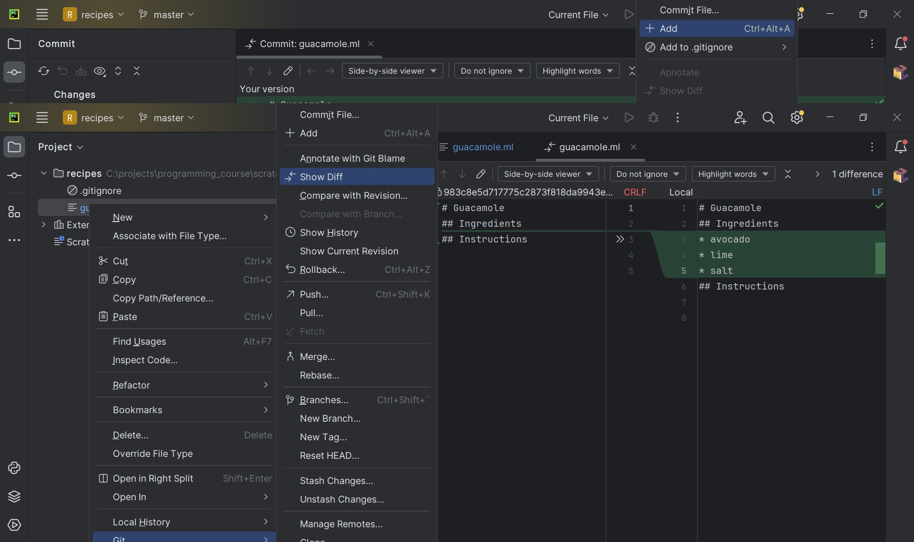

Basic Git Commands
Last updated on 2025-03-13 | Edit this page
Overview
Questions
- How do I record changes in Git?
- How do I record notes about what changes I made and why?
- How can I identify old versions of files?
- How do I review my changes?
- How can I recover old versions of files?
- How can I tell Git to ignore files I don’t want to track?
Objectives
- Go through the modify-add-commit cycle for one or more files.
- Explain where information is stored at each stage of that cycle.
- Distinguish between descriptive and non-descriptive commit messages.
- Explain what the HEAD of a repository is and how to use it.
- Compare various versions of tracked files.
- Restore old versions of files.
- Configure Git to ignore specific files.
The Modify-Add-Commit Cycle
In this episode we will continue working with the
recipes repository you have created in the previous
episode. First let’s make sure we’re still in the right directory. You
should be in the recipes directory.
Let’s create a file called guacamole.md that contains
the basic structure to have a recipe. We will use nano to
edit the file, but feel free to use another text editor if you prefer.
In particular, this does not have to be the core.editor you
set globally earlier. But remember, the steps to create create or edit a
new file will depend on the editor you choose (it might not be
nano).
Type the text below into the guacamole.md file:
OUTPUT
# Guacamole
## Ingredients
## InstructionsSave the file and exit your editor. Next, let’s verify that the file
was properly created by running the list command (ls):
OUTPUT
guacamole.mdguacamole.md contains three lines, which we can see by
running:
OUTPUT
# Guacamole
## Ingredients
## InstructionsIf we check the status of our project again, Git tells us that it’s noticed the new file:
OUTPUT
On branch main
No commits yet
Untracked files:
(use "git add <file>..." to include in what will be committed)
guacamole.md
nothing added to commit but untracked files present (use "git add" to track)The “untracked files” message means that there’s a file in the
directory that Git isn’t keeping track of. We can tell Git to track a
file using git add:
and then check that the right thing happened:
OUTPUT
On branch main
No commits yet
Changes to be committed:
(use "git rm --cached <file>..." to unstage)
new file: guacamole.md
Git now knows that it’s supposed to keep track of
guacamole.md, but it hasn’t recorded these changes as a
commit yet. To get it to do that, we need to run one more command:
OUTPUT
[main (root-commit) f22b25e] Create a template for recipe
1 file changed, 1 insertion(+)
create mode 100644 guacamole.mdWhen we run git commit, Git takes everything we have
told it to save by using git add and stores a copy
permanently inside the special .git directory. This
permanent copy is called a commit
(or revision) and its short
identifier is f22b25e. Your commit may have another
identifier.
We use the -m flag (for “message”) to record a short,
descriptive, and specific comment that will help us remember later on
what we did and why. If we just run git commit without the
-m option, Git will launch nano (or whatever
other editor we configured as core.editor) so that we can
write a longer message.
Good commit
messages start with a brief (<50 characters) statement about the
changes made in the commit. Generally, the message should complete the
sentence “If applied, this commit will”
If we run git status now:
OUTPUT
On branch main
nothing to commit, working tree cleanit tells us everything is up to date. If we want to know what we’ve
done recently, we can ask Git to show us the project’s history using
git log:
OUTPUT
commit f22b25e3233b4645dabd0d81e651fe074bd8e73b
Author: Alfredo Linguini <a.linguini@ratatouille.fr>
Date: Thu Aug 22 09:51:46 2023 -0400
Create a template for recipegit log lists all commits made to a repository in
reverse chronological order. The listing for each commit includes the
commit’s full identifier (which starts with the same characters as the
short identifier printed by the git commit command
earlier), the commit’s author, when it was created, and the log message
Git was given when the commit was created.
Where Are My Changes?
If we run ls at this point, we will still see just one
file called guacamole.md. That’s because Git saves
information about files’ history in the special .git
directory mentioned earlier so that our filesystem doesn’t become
cluttered (and so that we can’t accidentally edit or delete an old
version).
Practice using graphical Git tools
Using the graphical Git tools in PyCharm repeat the basic Git commands explained so far:
- Add a new file to the “recipes” repo
- Check which files are not yet committed
- Commit the file

Modifying tracked files
Now suppose Alfredo adds more information to the file. (Again, we’ll
edit with nano and then cat the file to show
its contents; you may use a different editor, and don’t need to
cat.)
OUTPUT
# Guacamole
## Ingredients
* avocado
* lemon
* salt
## InstructionsWhen we run git status now, it tells us that a file it
already knows about has been modified:
OUTPUT
On branch main
Changes not staged for commit:
(use "git add <file>..." to update what will be committed)
(use "git restore <file>..." to discard changes in working directory)
modified: guacamole.md
no changes added to commit (use "git add" and/or "git commit -a")The last line is the key phrase: “no changes added to commit”. We
have changed this file, but we haven’t told Git we will want to save
those changes (which we do with git add) nor have we saved
them (which we do with git commit). So let’s do that now.
It is good practice to always review our changes before saving them. We
do this using git diff. This shows us the differences
between the current state of the file and the most recently saved
version:
OUTPUT
diff --git a/guacamole.md b/guacamole.md
index df0654a..315bf3a 100644
--- a/guacamole.md
+++ b/guacamole.md
@@ -1,3 +1,6 @@
# Guacamole
## Ingredients
+* avocado
+* lemon
+* salt
## InstructionsThe output is cryptic because it is actually a series of commands for
tools like editors and patch telling them how to
reconstruct one file given the other. If we break it down into
pieces:
- The first line tells us that Git is producing output similar to the
Unix
diffcommand comparing the old and new versions of the file. - The second line tells exactly which versions of the file Git is
comparing;
df0654aand315bf3aare unique computer-generated labels for those versions. - The third and fourth lines once again show the name of the file being changed.
- The remaining lines are the most interesting, they show us the
actual differences and the lines on which they occur. In particular, the
+marker in the first column shows where we added a line.
After reviewing our change, it’s time to commit it:
OUTPUT
On branch main
Changes not staged for commit:
(use "git add <file>..." to update what will be committed)
(use "git restore <file>..." to discard changes in working directory)
modified: guacamole.md
no changes added to commit (use "git add" and/or "git commit -a")Whoops: Git won’t commit because we didn’t use git add
first. Let’s fix that:
OUTPUT
[main 34961b1] Add basic guacamole's ingredient
1 file changed, 3 insertions(+)Git insists that we add files to the set we want to commit before actually committing anything. This allows us to commit our changes in stages and capture changes in logical portions rather than only large batches. For example, suppose we’re adding a few citations to relevant research to our thesis. We might want to commit those additions, and the corresponding bibliography entries, but not commit some of our work drafting the conclusion (which we haven’t finished yet).
To allow for this, Git has a special staging area where it keeps track of things that have been added to the current changeset but not yet committed.
Staging Area
If you think of Git as taking snapshots of changes over the life of a
project, git add specifies what will go in a
snapshot (putting things in the staging area), and
git commit then actually takes the snapshot, and
makes a permanent record of it (as a commit). If you don’t have anything
staged when you type git commit, Git will prompt you to use
git commit -a or git commit --all, which is
kind of like gathering everyone to take a group photo! However,
it’s almost always better to explicitly add things to the staging area,
because you might commit changes you forgot you made. (Going back to the
group photo simile, you might get an extra with incomplete makeup
walking on the stage for the picture because you used -a!)
Try to stage things manually, or you might find yourself searching for
“git undo commit” more than you would like!

Let’s watch as our changes to a file move from our editor to the staging area and into long-term storage. First, we’ll improve our recipe by changing ‘lemon’ to ‘lime’:
OUTPUT
# Guacamole
## Ingredients
* avocado
* lime
* salt
## InstructionsOUTPUT
diff --git a/guacamole.md b/guacamole.md
index 315bf3a..b36abfd 100644
--- a/guacamole.md
+++ b/guacamole.md
@@ -1,6 +1,6 @@
# Guacamole
## Ingredients
* avocado
-* lemon
+* lime
* salt
## InstructionsSo far, so good: we’ve replaced one line (shown with a -
in the first column) with a new line (shown with a + in the
first column). Now let’s put that change in the staging area and see
what git diff reports:
There is no output: as far as Git can tell, there’s no difference between what it’s been asked to save permanently and what’s currently in the directory. However, if we do this:
OUTPUT
diff --git a/guacamole.md b/guacamole.md
index 315bf3a..b36abfd 100644
--- a/guacamole.md
+++ b/guacamole.md
@@ -1,6 +1,6 @@
# Guacamole
## Ingredients
* avocado
-* lemon
+* lime
* salt
## Instructionsit shows us the difference between the last committed change and what’s in the staging area. Let’s save our changes:
OUTPUT
[main 005937f] Modify guacamole to the traditional recipe
1 file changed, 1 insertion(+)check our status:
OUTPUT
On branch main
nothing to commit, working tree cleanand look at the history of what we’ve done so far:
OUTPUT
commit 005937fbe2a98fb83f0ade869025dc2636b4dad5 (HEAD -> main)
Author: Alfredo Linguini <a.linguini@ratatouille.fr>
Date: Thu Aug 22 10:14:07 2023 -0400
Modify guacamole to the traditional recipe
commit 34961b159c27df3b475cfe4415d94a6d1fcd064d
Author: Alfredo Linguini <a.linguini@ratatouille.fr>
Date: Thu Aug 22 10:07:21 2023 -0400
Add basic guacamole's ingredients
commit f22b25e3233b4645dabd0d81e651fe074bd8e73b
Author: Alfredo Linguini <a.linguini@ratatouille.fr>
Date: Thu Aug 22 09:51:46 2023 -0400
Create a template for recipeWord-based diffing
Sometimes, e.g. in the case of the text documents a line-wise diff is
too coarse. That is where the --color-words option of
git diff comes in very useful as it highlights the changed
words using colors.
Paging the Log
When the output of git log is too long to fit in your
screen, git uses a program to split it into pages of the
size of your screen. When this “pager” is called, you will notice that
the last line in your screen is a :, instead of your usual
prompt.
- To get out of the pager, press Q.
- To move to the next page, press Spacebar.
- To search for
some_wordin all pages, press / and typesome_word. Navigate through matches pressing N.
Limit Log Size
To avoid having git log cover your entire terminal
screen, you can limit the number of commits that Git lists by using
-N, where N is the number of commits that you
want to view. For example, if you only want information from the last
commit you can use:
OUTPUT
commit 005937fbe2a98fb83f0ade869025dc2636b4dad5 (HEAD -> main)
Author: Alfredo Linguini <a.linguini@ratatouille.fr>
Date: Thu Aug 22 10:14:07 2023 -0400
Modify guacamole to the traditional recipeYou can also reduce the quantity of information using the
--oneline option:
OUTPUT
005937f (HEAD -> main) Modify guacamole to the traditional recipe
34961b1 Add basic guacamole's ingredients
f22b25e Create a template for recipeYou can also combine the --oneline option with others.
One useful combination adds --graph to display the commit
history as a text-based graph and to indicate which commits are
associated with the current HEAD, the current branch
main, or other
Git references:
OUTPUT
* 005937f (HEAD -> main) Modify guacamole to the traditional recipe
* 34961b1 Add basic guacamole's ingredients
* f22b25e Create a template for recipeDirectories
Two important facts you should know about directories in Git.
- Git does not track directories on their own, only files within them. Try it for yourself:
Note, our newly created empty directory cakes does not
appear in the list of untracked files even if we explicitly add it
(via git add) to our repository. This is the
reason why you will sometimes see .gitkeep files in
otherwise empty directories. Unlike .gitignore, these files
are not special and their sole purpose is to populate a directory so
that Git adds it to the repository. In fact, you can name such files
anything you like.
- If you create a directory in your Git repository and populate it with files, you can add all files in the directory at once by:
Try it for yourself:
Before moving on, we will commit these changes.
To recap, when we want to add changes to our repository, we first
need to add the changed files to the staging area (git add)
and then commit the staged changes to the repository
(git commit):

Choosing a Commit Message
Which of the following commit messages would be most appropriate for
the last commit made to guacamole.md?
- “Changes”
- “Changed lemon for lime”
- “Guacamole modified to the traditional recipe”
Answer 1 is not descriptive enough, and the purpose of the commit is unclear; and answer 2 is redundant to using “git diff” to see what changed in this commit; but answer 3 is good: short, descriptive, and imperative.
Committing Changes to Git
Which command(s) below would save the changes of
myfile.txt to my local Git repository?
- Would only create a commit if files have already been staged.
- Would try to create a new repository.
- Is correct: first add the file to the staging area, then commit.
- Would try to commit a file “my recent changes” with the message myfile.txt.
Committing Multiple Files
The staging area can hold changes from any number of files that you want to commit as a single snapshot.
- Add some text to
guacamole.mdnoting the rough price of the ingredients. - Create a new file
groceries.mdwith a list of products and their prices for different markets. - Add changes from both files to the staging area, and commit those changes.
First we make our changes to the guacamole.md and
groceries.md files:
OUTPUT
# Guacamole
## Ingredients
* avocado (1.35)
* lime (0.64)
* salt (2)OUTPUT
# Market A
* avocado: 1.35 per unit.
* lime: 0.64 per unit
* salt: 2 per kgNow you can add both files to the staging area. We can do that in one line:
Or with multiple commands:
Now the files are ready to commit. You can check that using
git status. If you are ready to commit use:
OUTPUT
[main cc127c2]
Write prices for ingredients and their source
2 files changed, 7 insertions(+)
create mode 100644 groceries.mdPractice using graphical Git tools
Using the graphical Git tools in PyCharm repeat the basic Git commands explained so far:
- In the “recipes” repo, modify the
guacamole.mdrecipe. - Visually inspect what has been changed in the file.
- Commit the file, and visually inspect the Git commit log.
Visually diff-ing in PyCharm: 
Visually inspecting commit logs:

Key Points
-
git statusshows the status of a repository. - Files can be stored in a project’s working directory (which users see), the staging area (where the next commit is being built up) and the local repository (where commits are permanently recorded).
-
git addputs files in the staging area. -
git commitsaves the staged content as a new commit in the local repository. - Write a commit message that accurately describes your changes.
Exploring History
As we saw in the previous episode, we can refer to commits by their
identifiers. You can refer to the most recent commit of the
working directory by using the identifier HEAD.
We’ve been adding small changes at a time to
guacamole.md, so it’s easy to track our progress by
looking, so let’s do that using our HEADs. Before we start,
let’s make a change to guacamole.md, adding yet another
line.
OUTPUT
# Guacamole
## Ingredients
* avocado
* lime
* salt
## Instructions
An ill-considered changeNow, let’s see what we get.
OUTPUT
diff --git a/guacamole.md b/guacamole.md
index b36abfd..0848c8d 100644
--- a/guacamole.md
+++ b/guacamole.md
@@ -4,3 +4,4 @@
* lime
* salt
## Instructions
+An ill-considered changewhich is the same as what you would get if you leave out
HEAD (try it). The real goodness in all this is when you
can refer to previous commits. We do that by adding ~1
(where “~” is “tilde”, pronounced [til-duh])
to refer to the commit one before HEAD.
If we want to see the differences between older commits we can use
git diff again, but with the notation HEAD~1,
HEAD~2, and so on, to refer to them:
OUTPUT
diff --git a/guacamole.md b/guacamole.md
index df0654a..b36abfd 100644
--- a/guacamole.md
+++ b/guacamole.md
@@ -1,3 +1,6 @@
# Guacamole
## Ingredients
+* avocado
+* lime
+* salt
## Instructions
+An ill-considered changeWe could also use git show which shows us what changes
we made at an older commit as well as the commit message, rather than
the differences between a commit and our working directory that
we see by using git diff.
OUTPUT
commit f22b25e3233b4645dabd0d81e651fe074bd8e73b
Author: Alfredo Linguini <a.linguini@ratatouille.fr>
Date: Thu Aug 22 10:07:21 2023 -0400
Create a template for recipe
diff --git a/guacamole.md b/guacamole.md
new file mode 100644
index 0000000..df0654a
--- /dev/null
+++ b/guacamole.md
@@ -0,0 +1,3 @@
+# Guacamole
+## Ingredients
+## InstructionsIn this way, we can build up a chain of commits. The most recent end
of the chain is referred to as HEAD; we can refer to
previous commits using the ~ notation, so
HEAD~1 means “the previous commit”, while
HEAD~123 goes back 123 commits from where we are now.
We can also refer to commits using those long strings of digits and
letters that both git log and git show
display. These are unique IDs for the changes, and “unique” really does
mean unique: every change to any set of files on any computer has a
unique 40-character identifier. Our first commit was given the ID
f22b25e3233b4645dabd0d81e651fe074bd8e73b, so let’s try
this:
OUTPUT
diff --git a/guacamole.md b/guacamole.md
index df0654a..93a3e13 100644
--- a/guacamole.md
+++ b/guacamole.md
@@ -1,3 +1,7 @@
# Guacamole
## Ingredients
+* avocado
+* lime
+* salt
## Instructions
+An ill-considered changeThat’s the right answer, but typing out random 40-character strings is annoying, so Git lets us use just the first few characters (typically seven for normal size projects):
OUTPUT
diff --git a/guacamole.md b/guacamole.md
index df0654a..93a3e13 100644
--- a/guacamole.md
+++ b/guacamole.md
@@ -1,3 +1,7 @@
# Guacamole
## Ingredients
+* avocado
+* lime
+* salt
## Instructions
+An ill-considered changeAll right! So we can save changes to files and see what we’ve
changed. Now, how can we restore older versions of things? Let’s suppose
we change our mind about the last update to guacamole.md
(the “ill-considered change”).
git status now tells us that the file has been changed,
but those changes haven’t been staged:
OUTPUT
On branch main
Changes not staged for commit:
(use "git add <file>..." to update what will be committed)
(use "git restore <file>..." to discard changes in working directory)
modified: guacamole.md
no changes added to commit (use "git add" and/or "git commit -a")We can put things back the way they were by using
git restore:
OUTPUT
# Guacamole
## Ingredients
* avocado
* lime
* salt
## InstructionsAs you might guess from its name, git restore restores
an old version of a file. By default, it recovers the version of the
file recorded in HEAD, which is the last saved commit. If
we want to go back even further, we can use a commit identifier instead,
using -s option:
OUTPUT
# Guacamole
## Ingredients
## InstructionsOUTPUT
On branch main
Changes not staged for commit:
(use "git add <file>..." to update what will be committed)
(use "git restore <file>..." to discard changes in working directory)
modified: guacamole.md
no changes added to commit (use "git add" and/or "git commit -a")
Notice that the changes are not currently in the staging area, and
have not been committed. If we wished, we can put things back the way
they were at the last commit by using git restore to
overwrite the working copy with the last committed version:
OUTPUT
# Guacamole
## Ingredients
* avocado
* lime
* salt
## InstructionsIt’s important to remember that we must use the commit number that
identifies the state of the repository before the change we’re
trying to undo. A common mistake is to use the number of the commit in
which we made the change we’re trying to discard. In the example below,
we want to retrieve the state from before the most recent commit
(HEAD~1), which is commit f22b25e. We use the
. to mean all files:

So, to put it all together, here’s how Git works in cartoon form:

The fact that files can be reverted one by one tends to change the way people organize their work. If everything is in one large document, it’s hard (but not impossible) to undo changes to the introduction without also undoing changes made later to the conclusion. If the introduction and conclusion are stored in separate files, on the other hand, moving backward and forward in time becomes much easier.
Recovering Older Versions of a File
Jennifer has made changes to the Python script that she has been working on for weeks, and the modifications she made this morning “broke” the script and it no longer runs. She has spent ~ 1hr trying to fix it, with no luck…
Luckily, she has been keeping track of her project’s versions using
Git! Which commands below will let her recover the last committed
version of her Python script called data_cruncher.py?
$ git restore$ git restore data_cruncher.py$ git restore -s HEAD~1 data_cruncher.py$ git restore -s <unique ID of last commit> data_cruncher.pyBoth 2 and 4
The answer is (5)-Both 2 and 4.
The restore command restores files from the repository,
overwriting the files in your working directory. Answers 2 and 4 both
restore the latest version in the repository of the
file data_cruncher.py. Answer 2 uses HEAD to
indicate the latest, whereas answer 4 uses the unique ID of the
last commit, which is what HEAD means.
Answer 3 gets the version of data_cruncher.py from the
commit before HEAD, which is NOT what we
wanted.
Answer 1 results in an error. You need to specify a file to restore.
If you want to restore all files you should use
git restore .
Reverting a Commit
Jennifer is collaborating with colleagues on her Python script. She
realizes her last commit to the project’s repository contained an error,
and wants to undo it. Jennifer wants to undo correctly so everyone in
the project’s repository gets the correct change. The command
git revert [erroneous commit ID] will create a new commit
that reverses the erroneous commit.
The command git revert is different from
git restore -s [commit ID] . because
git restore returns the files not yet committed within the
local repository to a previous state, whereas git revert
reverses changes committed to the local and project repositories.
Below are the right steps and explanations for Jennifer to use
git revert, what is the missing command?
________ # Look at the git history of the project to find the commit IDCopy the ID (the first few characters of the ID, e.g. 0b1d055).
git revert [commit ID]Type in the new commit message.
Save and close.
The command git log lists project history with commit
IDs.
The command git show HEAD shows changes made at the
latest commit, and lists the commit ID; however, Jennifer should
double-check it is the correct commit, and no one else has committed
changes to the repository.
Understanding Workflow and History
What is the output of the last command in
BASH
$ cd recipes
$ echo "I like tomatoes, therefore I like ketchup" > ketchup.md
$ git add ketchup.md
$ echo "ketchup enhances pasta dishes" >> ketchup.md
$ git commit -m "My opinions about the red sauce"
$ git restore ketchup.md
$ cat ketchup.md # this will print the content of ketchup.md on screenOUTPUT
ketchup enhances pasta dishesOUTPUT
I like tomatoes, therefore I like ketchupOUTPUT
I like tomatoes, therefore I like ketchup ketchup enhances pasta dishesOUTPUT
Error because you have changed ketchup.md without committing the changes
The answer is 2.
The changes to the file from the second echo command are
only applied to the working copy, The command
git add ketchup.md places the current version of
ketchup.md into the staging area. not the version in the
staging area.
So, when git commit -m "My opinions about the red sauce"
is executed, the version of ketchup.md committed to the
repository is the one from the staging area and has only one line.
At this time, the working copy still has the second line (and
git status will show that the file is modified). However,
git restore ketchup.md replaces the working copy with the
most recently committed version of ketchup.md. So,
cat ketchup.md will output
OUTPUT
I like tomatoes, therefore I like ketchupChecking Understanding of
git diff
Consider this command: git diff HEAD~9 guacamole.md.
What do you predict this command will do if you execute it? What happens
when you do execute it? Why?
Try another command, git diff [ID] guacamole.md, where
[ID] is replaced with the unique identifier for your most recent commit.
What do you think will happen, and what does happen?
Getting Rid of Staged Changes
git restore can be used to restore a previous commit
when unstaged changes have been made, but will it also work for changes
that have been staged but not committed? Make a change to
guacamole.md, add that change using git add,
then use git restore to see if you can remove your
change.
After adding a change, git restore can not be used
directly. Let’s look at the output of git status:
OUTPUT
On branch main
Changes to be committed:
(use "git restore --staged <file>..." to unstage)
modified: guacamole.md
Note that if you don’t have the same output you may either have forgotten to change the file, or you have added it and committed it.
Using the command git restore guacamole.md now does not
give an error, but it does not restore the file either. Git helpfully
tells us that we need to use git restore --staged first to
unstage the file:
Now, git status gives us:
OUTPUT
On branch main
Changes not staged for commit:
(use "git add <file>..." to update what will be committed)
(use "git git restore <file>..." to discard changes in working directory)
modified: guacamole.md
no changes added to commit (use "git add" and/or "git commit -a")This means we can now use git restore to restore the
file to the previous commit:
OUTPUT
On branch main
nothing to commit, working tree cleanPractice using graphical Git tools
Using the graphical Git tools in PyCharm repeat the basic Git commands explained so far:
- Revert un-staged changes in the
guacamole.mdrecipe. - Revert the
guacamole.mdrecipe to an earlier commit -HEAD~2. - Examine changes between
HEAD~1andHEAD~5.
- Discarding un-staged changes with PyCharm:

- “Revert the
guacamole.mdrecipe to an earlier commit -HEAD~2”:
This was actually a tricky question! PyCharm does not provide a direct GUI option to revert a file to a specific Git revision. This is one example of GUI tools limitations, which shows the importance of understanding and mastering Git from the command line.
- Comparing two Git revisions:

Key Points
-
git diffdisplays differences between commits. -
git restorerecovers old versions of files.
Ignoring Things
What if we have files that we do not want Git to track for us, like backup files created by our editor or intermediate files created during data analysis? Let’s create a few dummy files:
and see what Git says:
OUTPUT
On branch main
Untracked files:
(use "git add <file>..." to include in what will be committed)
a.png
b.png
c.png
receipts/
nothing added to commit but untracked files present (use "git add" to track)Putting these files under version control would be a waste of disk space. What’s worse, having them all listed could distract us from changes that actually matter, so let’s tell Git to ignore them.
We do this by creating a file in the root directory of our project
called .gitignore:
OUTPUT
*.png
receipts/These patterns tell Git to ignore any file whose name ends in
.png and everything in the receipts directory.
(If any of these files were already being tracked, Git would continue to
track them.)
Once we have created this file, the output of git status
is much cleaner:
OUTPUT
On branch main
Untracked files:
(use "git add <file>..." to include in what will be committed)
.gitignore
nothing added to commit but untracked files present (use "git add" to track)The only thing Git notices now is the newly-created
.gitignore file. You might think we wouldn’t want to track
it, but everyone we’re sharing our repository with will probably want to
ignore the same things that we’re ignoring. Let’s add and commit
.gitignore:
OUTPUT
On branch main
nothing to commit, working tree cleanAs a bonus, using .gitignore helps us avoid accidentally
adding files to the repository that we don’t want to track:
OUTPUT
The following paths are ignored by one of your .gitignore files:
a.png
Use -f if you really want to add them.If we really want to override our ignore settings, we can use
git add -f to force Git to add something. For example,
git add -f a.csv. We can also always see the status of
ignored files if we want:
OUTPUT
On branch main
Ignored files:
(use "git add -f <file>..." to include in what will be committed)
a.png
b.png
c.png
receipts/
nothing to commit, working tree cleanIf you only want to ignore the contents of
receipts/plots, you can change your .gitignore
to ignore only the /plots/ subfolder by adding the
following line to your .gitignore:
OUTPUT
receipts/plots/This line will ensure only the contents of
receipts/plots is ignored, and not the contents of
receipts/data.
Including Specific Files
How would you ignore all .png files in your root
directory except for final.png? Hint: Find out what
! (the exclamation point operator) does
You would add the following two lines to your .gitignore:
OUTPUT
*.png # ignore all png files
!final.png # except final.pngThe exclamation point operator will include a previously excluded entry.
Note also that because you’ve previously committed .png
files in this lesson they will not be ignored with this new rule. Only
future additions of .png files added to the root directory
will be ignored.
Ignoring all data Files in a Directory
Assuming you have an empty .gitignore file, and given a directory structure that looks like:
BASH
receipts/data/market_position/gps/a.dat
receipts/data/market_position/gps/b.dat
receipts/data/market_position/gps/c.dat
receipts/data/market_position/gps/info.txt
receipts/plotsWhat’s the shortest .gitignore rule you could write to
ignore all .dat files in
result/data/market_position/gps? Do not ignore the
info.txt.
Appending receipts/data/market_position/gps/*.dat will
match every file in receipts/data/market_position/gps that
ends with .dat. The file
receipts/data/market_position/gps/info.txt will not be
ignored.
Ignoring all data Files in the repository
Let us assume you have many .csv files in different
subdirectories of your repository. For example, you might have:
BASH
results/a.csv
data/experiment_1/b.csv
data/experiment_2/c.csv
data/experiment_2/variation_1/d.csvHow do you ignore all the .csv files, without explicitly
listing the names of the corresponding folders?
In the .gitignore file, write:
OUTPUT
**/*.csvThis will ignore all the .csv files, regardless of their
position in the directory tree. You can still include some specific
exception with the exclamation point operator.
Key Points
- The .gitignore file is a text file that tells Git which files to track and which to ignore in the repository.
- You can list specific files or folders to be ignored by Git, or you can include files that would normally be ignored.